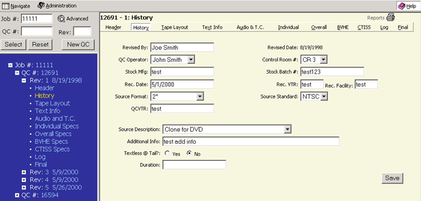

Alt+y then ENTER will take you to this page or clicking on HISTORY in the menu bar on the right side. You can also click on the word HISTORY in the Tree Frame (blue area).

The History page displays fields for the following information which includes:
|
A number of fields include pull down menus with predetermined choices. After entering the information please click the SAVE button to save your data.